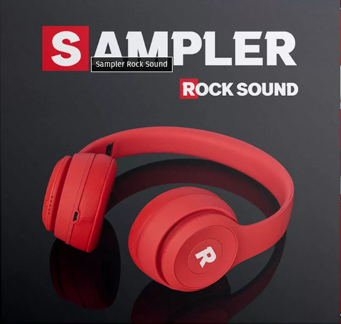
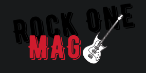
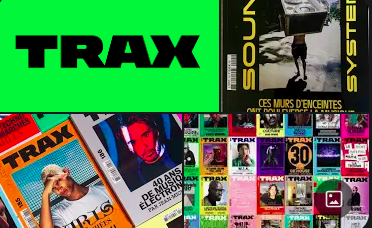
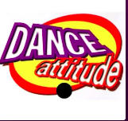

Playlists basées sur les samplers des magazines de musique des années 1990 et 2000.

Ce magazine de musique rock a été publié de 1992 à 2007. Il couvrait divers genres de rock, y compris le punk, le metal, l'alternative et l'indie. Rock Sound était connu pour ses interviews approfondies, ses critiques d'albums et ses articles sur la scène musicale émergente. Ce magazine a énormément contribué à ma culture musicale actuelle car il a eu le mérite de me faire découvrir de nombreux groupes, méconnus à l'époque mais dont certains sont actuellement incontournables.
J'ai découvert ce magazine en 1995 grâce au sampler inclus dans le 3X plus de bruit qui m'a fait connaître ce magazine.

Rock One était un magazine de musique rock publié en France dans les années 1990 et 2000. Il se concentrait principalement sur les genres rock et metal, offrant des critiques d'albums, des interviews d'artistes et des articles sur la scène musicale rock. Ce magazine m'a permis de découvrir d'autres influences Rock, je l'avais découvert par pur hasard dans une presse !
D-Side est un magazine bimestriel de 100 pages fondé en octobre 2000 à la suite de la scission de la rédaction du magazine Elegy et traitant de la culture underground et de la musique gothiques, indus, electro, new wave, dark wave, etc. Il comprend également un CD sampler d'une quinzaine de titres. Si le magazine voue une majeure partie de son contenu au secteur musical, il inclut aussi des contenus systématiques et développés sur le cinéma et la littérature. Le dernier numéro paraît en septembre 2010 et le magazine disparaît au profit d'une nouvelle publication intitulée Obsküre.
Ce magazine m'a permis de découvrir d'autres influences, d'autres styles que je ne connaissais pas. J'ai découvert ce magazine en 2010, dans les derniers numéros avant le passage à Obsküre, mais j'ai moins accroché à ce dernier.

Trax Magazine, ou simplement Trax, est un magazine mensuel français, créé en 1997, consacré à la musique électronique et aux cultures qui l'entourent. Le magazine et son site ont fermé en 2023. Son siège était situé au 55 ter rue de la Chapelle dans le 18e arrondissement de Paris.
Les années 90 et 2000 ont marqué le début des musiques électroniques et TRAX m'a permis de découvrir des styles moins connus et plus underground. J'ai découvert ce magazine en 2006.

Dance Attitude est un magazine français consacré à la musique dance et électronique (principalement eurodance qui a fortement marqué cette décénie), publié dans les années 1990 et 2000. Il couvrait divers genres de musique dance, y compris la house, la techno, le trance et le eurodance. Le magazine comprenait des interviews d'artistes, des critiques d'albums, des articles sur la scène musicale dance et des informations sur les événements et les clubs.
Ce magazine m'a permis de découvrir d'autres influences dans le domaine de la musique électronique. J'ai découvert ce magazine en 1995 dans une presse. J'ai volontairement ignoré les titres des derniers numéros qui ne collaient plus à l'essentiel de la musique dance.